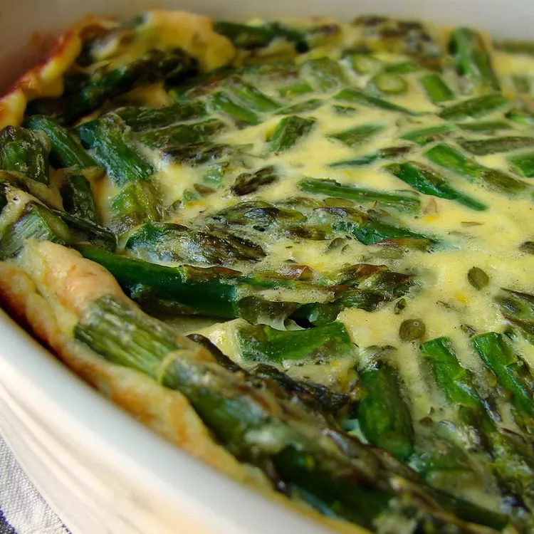

Asparagus Pie

Asparagus Pie for any Occassion
Your pick for one of the best savory Easter brunch casseroles features a full pound of asparagus. Talk about a
painless way to inspire picky eaters to veg out! A batter of flour, eggs, milk, and fresh thyme surrounds each
stalk for a sliceable dish that's part frittata, part brunch bread — and fully delicious.
Ingredients
- ½ cup flour
- 1 teaspoon chopped fresh thyme
- ¾ teaspoon white sugar
- ¾ teaspoon salt, divided
- 1 pinch fresh ground black pepper
- 1 ¼ cups milk
- 3 large eggs
- 1 tablespoon lemon zest
- 2 tablespoons butter
- 1 pound fresh asparagus, trimmed and cut into 2-inch pieces
Cooking Steps!
- Prep the oven. Preheat the oven to 350 degrees F (175 degrees C). Grease a 9-inch pie pan.
- Stir the ingredients. Stir flour, thyme, sugar, 1/2 teaspoon salt, and pepper together in a
large bowl. Whisk in milk, then whisk in eggs and lemon zest until batter is smooth.
- Sautee the asparagus. Melt butter in a heavy skillet over medium heat. Add asparagus and
remaining 1/4 teaspoon salt; cook, stirring occasionally, until asparagus is dark green and coated with
butter, 1 to 2 minutes.
- Bake!. Transfer asparagus to the prepared pan and pour batter evenly over
top. Bake in the preheated oven until puffed on top and browned around the edges, 40 to 45 minutes.